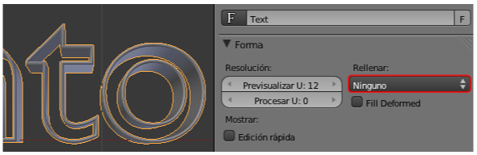

Actividades
1- Busca problemas con los bucles
Saca a escena una Esfera Geodésica y comprueba cómo Blender no te ofrece ningún posible bucle (fucsia).
Haz lo mismo con Suzanne.
2- Investiga a fondo "Deslizar borde"
Comprueba cómo la herramienta Deslizar borde funciona con lados sueltos. Su verdadera utilidad se encuentra en deslizar bucles enteros pero tendremos esta posibilidad en cuenta.
3- Compara opciones de borrado
Cuando tengas seleccionado un bucle de lados prueba a seleccionar Vértices en el menú "Supr" para verificar la diferencia con Bucle de lados.
4- Haz pruebas con las adherencias
Usa la adherencia que hemos estudiado cuando tengas varios vértices seleccionados y trata de dirigir el desplazamiento del Cursor 3D hacia el centro de una faceta de un cubo o de una Esfera UV. Observa cómo la Manipulador 3D te está indicando el lugar al que se desplazará el Cursor 3D.
5- Profundiza en los textos
Investiga las posibilidades estéticas que te brinda el panel Forma cambiando Ambos a Ninguno.
6- Prepara tu arsenal tipográfico y práctica con él
- Recorre los sitios que te hemos recomendado y comienza tu colección personal de tipografías. Ese es un trabajo que lleva tiempo y que realmente no se termina nunca, pero un diseñador debe tener un buen arsenal de tipografías (no hablamos de cantidad, sino de calidad).
- Descarga algunas tipografías que te gusten y guárdalas en los directorios indicados. Cuando ejecutes Blender cambia la tipografía de un objeto Texto y compara varios resultados buscando cuál es la que mejor se adapta a tus expectativas.
7- Juega con las Normales
En un modelado con las normales correctas selecciona algunas caras o bucles de caras y haz Malla/Normales/Voltear normales. Analiza las consecuencias si las hay.
8- Girar con mallas cerradas
Usa la Herramienta ("T") Girar con mallas cerradas como una esfera y busca utilidades. ¿Recuerdas Material didáctico: Círculo cromático?